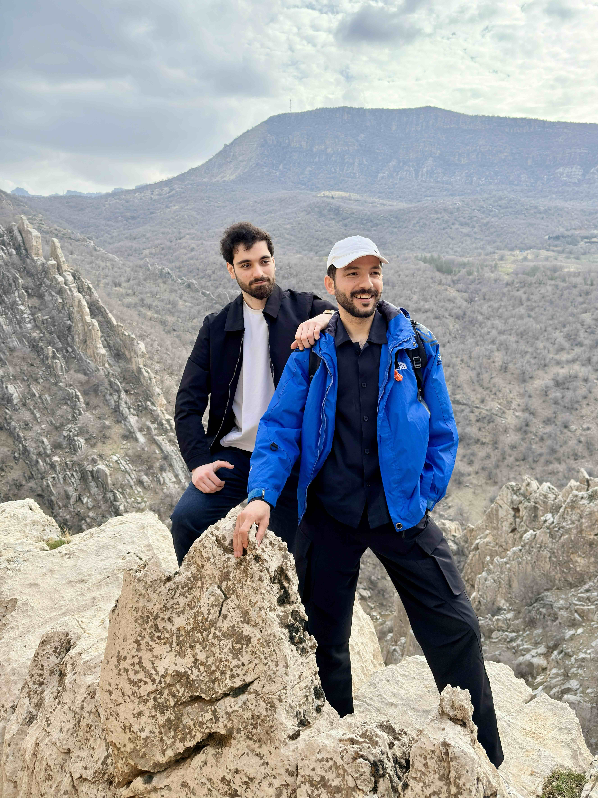
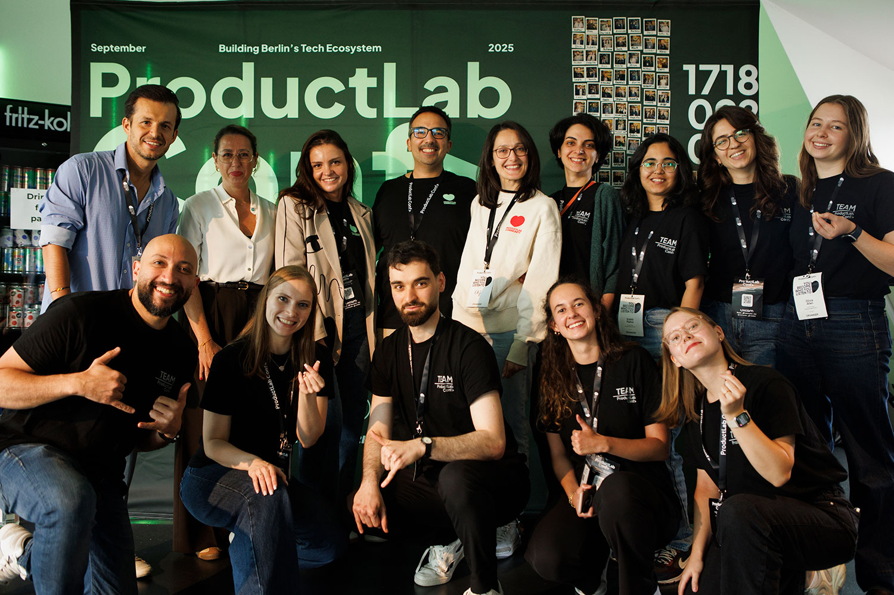
I walked through the full onboarding as Alex, measuring each step against one question:
Does this move Alex closer to creating something — or does it move ablefy closer to collecting something?
This is not a product gap. It's a conversion problem. Every minute past the 15-minute evaluation window is a creator who doesn't convert.
I validated the audit across 30+ independent sources — German and English blogs, platform reviews, YouTube walkthroughs.
These are not constructed pain points. They are the most consistent signal across the data.
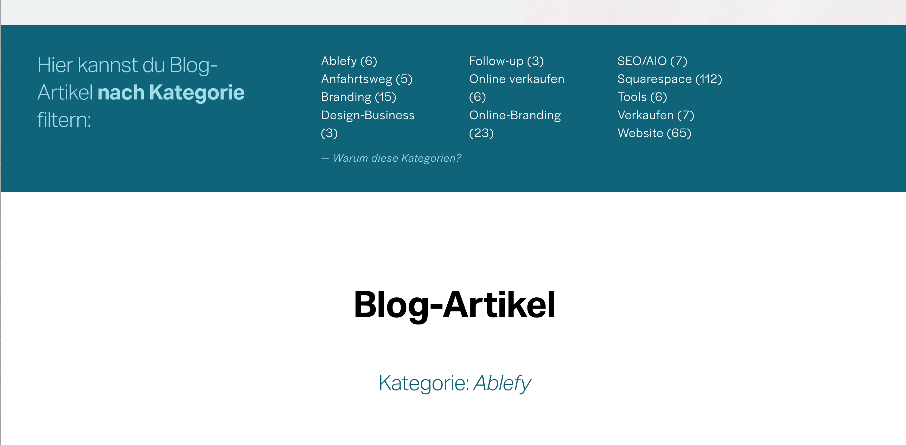
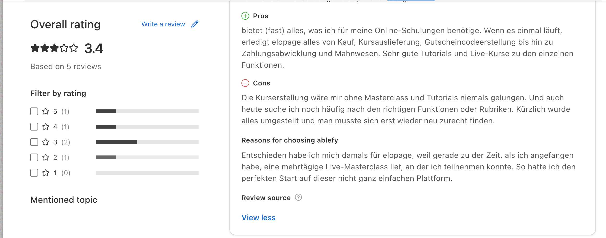
| Blocker | What happens | Time lost | Impact |
|---|---|---|---|
| 1. Onboarding | 6-step data collection form, compliance warnings, phone number — all before Alex creates anything | ~8 min | 100% of new users delayed |
| 2. Course Creation | 5 payment models, 12 Advanced Settings toggles, legacy page builder, buried content tab, no guidance | ~45 min – 3 hrs | Alex questions if ablefy is too complex |
| 3. Community | Redirect to foroom.ai, separate auth, blank page dead end, no return path | ~15 min | Trust tax — feels like a different product |
The platform is built for operators who already know what they're doing — not for creators who are still deciding whether to stay.
Ablefy optimizes for data completion rather than user momentum. The 6-step onboarding form, the compliance banners, the 5 payment models — these all serve the platform, not the creator.
Alex's first 15 minutes serve ablefy's needs, not his. Before creating anything, he faces a 6-step business survey.
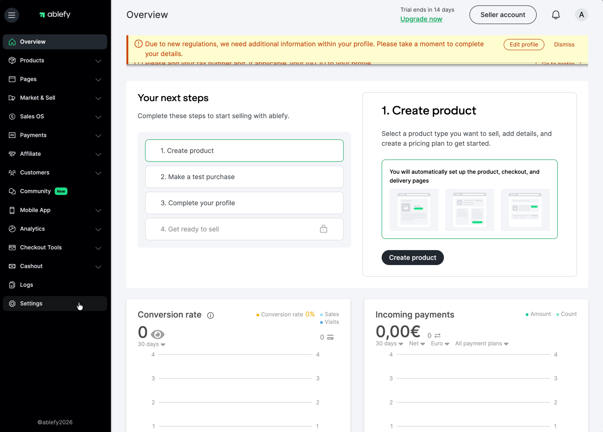
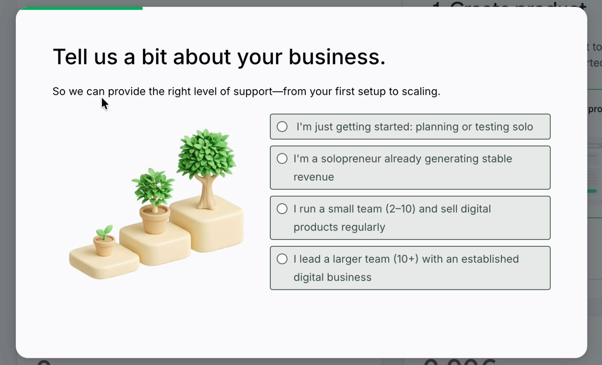
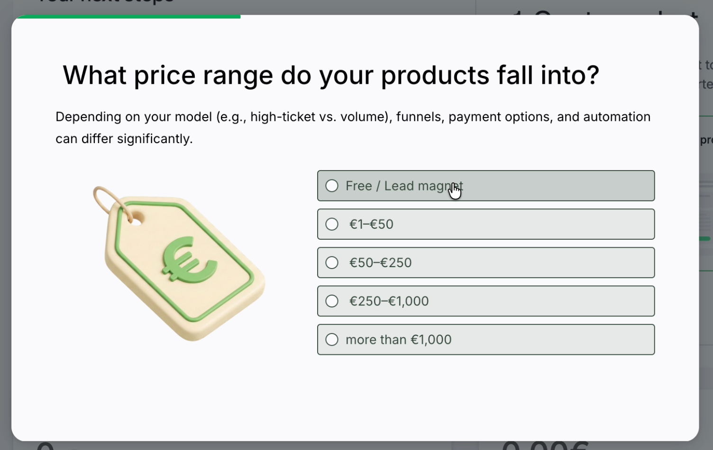
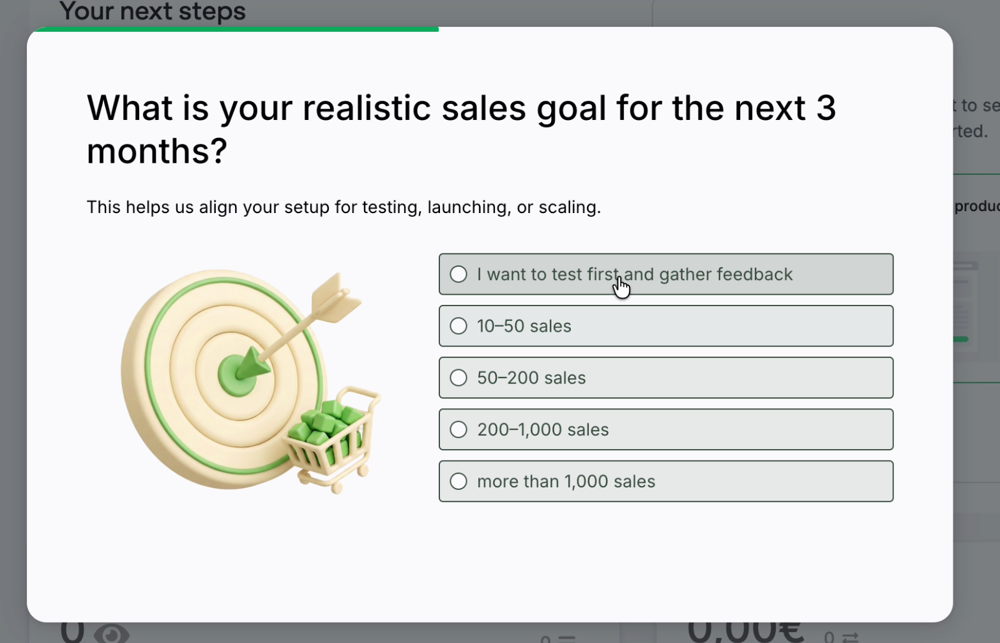
The interface exposes power-user complexity at the moment Alex needs simplicity. He's evaluating, not configuring.
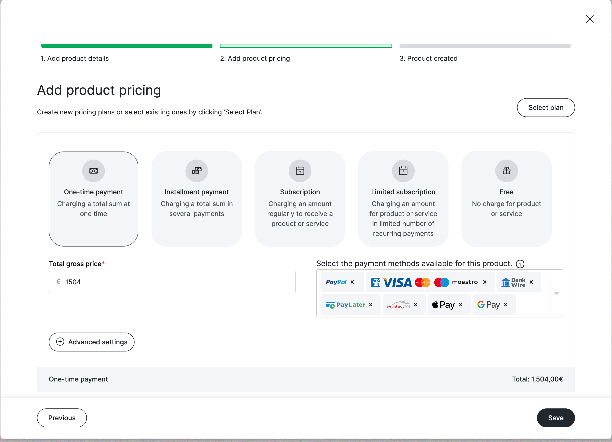
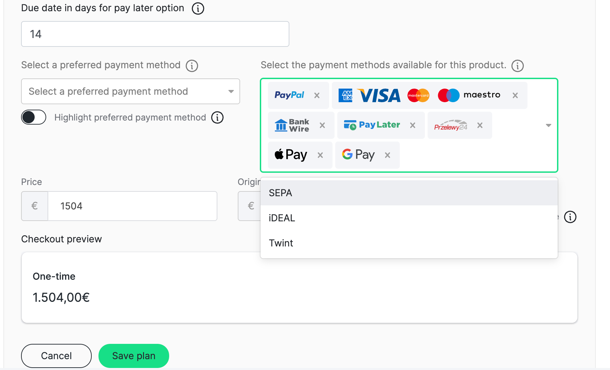
| Step | Challenge | Type |
|---|---|---|
| Signup | Phone required, no social login | PP1 |
| Dashboard | 3 compliance banners on first load | PP1 |
| Onboarding | 6-step form, zero output for Alex | PP1 |
| Dashboard | Admin tasks mixed with creation steps | PP1 |
| Creation | 5 payment tiles + 12 Advanced Settings toggles | PP2 |
| Creation | UI elements shift without transitions | PP2 |
| Creation | "Upload from library" label mismatch | PP2 |
| Creation | "Previous" button closes modal | PP2 |
| Post-creation | Primary action buried below 3 secondary options | PP2 |
| Products | Content tab hidden, no "add first lesson" prompt | PP2 |
| Content | Legacy page builder requires a learning curve | PP2 |
I reverse-engineered one — extracting tokens, type scale, spacing, and component patterns directly from the live product before writing a line of prototype code.
Five hours. Runtime errors, dependency conflicts, broken state on reload. I kept the scope. Real conditions, not ideal ones.
The challenge wasn't any single screen. It was ensuring signup, creation, and post-creation feel like one product — not three features bolted together.
Why Blockers 1 + 2, not community:
Name, email, password. One screen. 30 seconds. All business data deferred to Settings.
Personalized greeting. "Show me how" or "Skip." No data collected, no business questions.
Blur-overlay modal guides first session. Hero card adapts. SetupSteps tracker persists.
"Sell" renamed to "Live." Dropdown positioning fixed. Min-height 640px prevents collapse.
Animated checkmark. "Add Course Content" leads. "More options" disclosure replaced with SetupSteps.
Inline module + lesson creation. Saving first module sets localStorage flag → dashboard advances automatically.
Scans every changed file for MIT header, a11y, design-system drift, and safety issues before changes land.
Auto-applies findings tagged "Auto-fixable: yes." Only touches what code-reviewer explicitly queued — never invents fixes.
Vitest runs silently after every file save. Regression failures surface immediately — no manual test step needed.
| Step | Time | What happens |
|---|---|---|
| Signup | 30 sec | Name, email, password. No phone. No shop name. |
| AI Chatbot | 60 sec | Replaces the 6-step form. Alex says "I want to sell an AI training course for €1,499." 2–3 follow-ups. Same data, zero friction. |
| Course Generated | 30 sec | AI creates: course structure with modules, product page with description, checkout with defaults, landing page. Alex sees a complete course, not a blank canvas. |
| Edit or Fresh | — | Edit what was generated, or start from scratch. The difference: editing something that exists vs. learning how to build from nothing. |
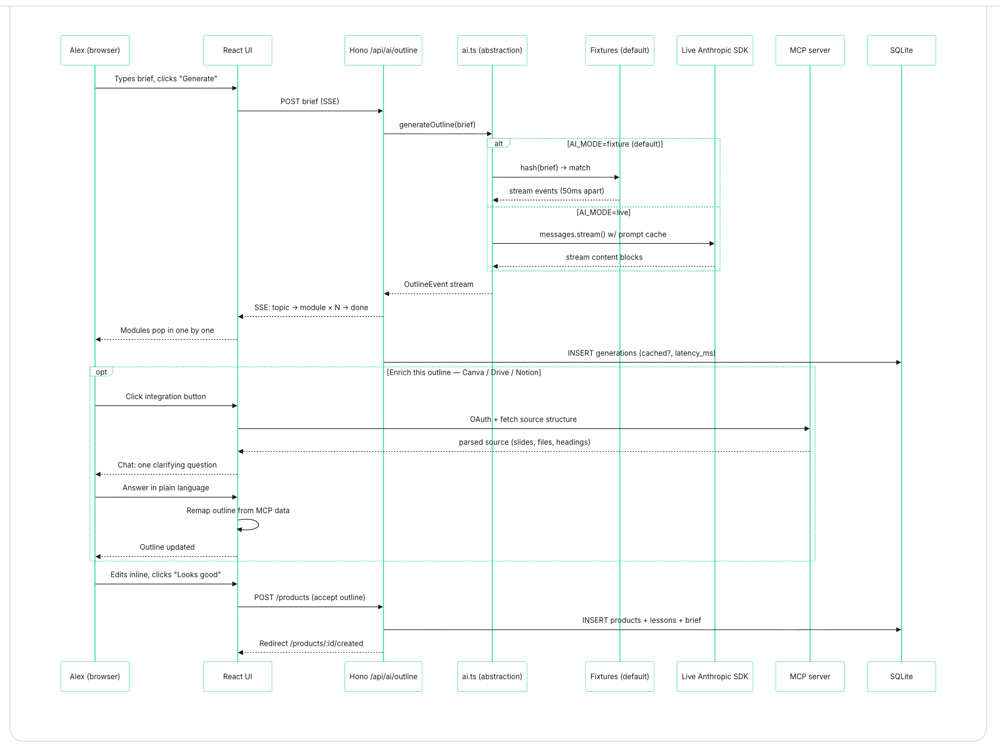
Alex already has a Canva deck, a Drive folder, a Notion page. After the AI generates an outline, an "Enrich this outline" panel lets him connect what he already built.
| Old | AI-first |
|---|---|
| "Describe your course in a text box" | "Connect your existing Canva deck" |
| "Upload your assets one by one" | "Point us at your Drive folder" |
| "Structure your course manually" | "Sync your Notion page" |
| "Start over in ablefy" | "Bring what you have" |
| Risk | What could go wrong | Mitigation |
|---|---|---|
| Adoption anxiety | Removing the 6-step form creates uncertainty — creators wonder what they agreed to | Surface deferred fields as optional wins after first product is created, not as skipped steps |
| Two-path inconsistency | The guided modal and direct creation route give different experiences. Engineering asks: which is the source of truth? | One creation flow. Guided modal for all new users. Full settings accessible after creation only. |
| Measurement gap | If onboarding_events isn't tracked correctly pre-launch, there's no baseline. Option 01 ships but can't be proven. |
Log signup_completed and product_created server-side before shipping. Baseline first. |
Track 2 ends with a data-backed, validated decision direction — not a hunch.